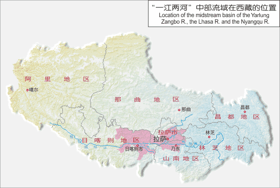
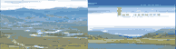
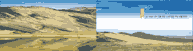

区域概况
×
“一江两河”（即雅鲁藏布江、拉萨河、年楚河）中部流域地区位于西藏自治区中南部的藏南河谷，东起桑日，西抵拉孜，南至藏南高原湖盆，北达冈底斯山-念青唐古拉山南麓，总面积6.63万平方千米。行政区域包括拉萨市、山南地区和日喀则地区的18个县、市（区），总人口93.28万。 高山和宽窄相间的河谷是本区基本的地貌结构。雅鲁藏布江河谷是沿着雅鲁藏布江断裂带发育的构造谷地，呈近东西走向，自西向东分别为日喀则宽谷、大竹卡-约居窄（峡）谷和泽当宽谷。窄谷段两侧地势高耸，谷坡陡峻，谷底较窄，沿岸有3-4级阶地或洪积台地发育，谷底宽仅100-200米，河床纵比降大，阶地零星分布。在宽谷段谷底宽度迅速增大，一般宽3000-5000米，支流汇口处可达6000-7000米。宽谷内河道平缓，江面平均纵比降约为0.06%-0.08%，河床多分汊，心滩、河漫滩较发育，呈典型辫状水系，河道稳定性差。心滩上很少有植物生长，高河漫滩大部分已开垦为农田，河漫滩以上有1-2级阶地发育。山麓普遍发育有洪积扇，冲沟密集，在支沟口往往发育洪（冲）积台地。拉萨河和年楚河分别为雅鲁藏布江北、南两侧的主要支流，两条河流均适应于构造发育，并具有相同的河谷结构。 雅鲁藏布江是河谷风沙地貌十分发育的地区。在雅鲁藏布江上、中游各宽谷与窄谷内，沙丘成群分布，形态复杂，多呈斑块状、片状不连续分布，总体上形成沿河谷走向呈带状不连续分布的格局。 “一江两河”中部流域地区自然条件较好，开发历史悠久，经济相对发达，是西藏自治区政治、经济和文化的中心地带，也是西部大开发的重点地区。但近几十年以来，受气候变化、人为活动干扰的影响，本区出现了土地资源过度利用，土地沙漠化、生态退化等问题，并成为影响本区可持续发展的巨大障碍。因此，加快本区土地沙漠化的综合防治工作，促使沙漠化土地的逆转，促进区域经济社会的可持续发展，是本区一件迫在眉睫的大事。 
综合环境


自然环境
社会经济环境
草地退化
水土流失
生态环境
冰川冻土
植被
土壤
水系
气候
地貌
地质
地势地形
卫星影像
土地利用
牧业
林业
农业
交通
工业
综合经济
人口
政区
社会经济环境
>
政区
全区
拉萨市、山南地区
阿里地区、那曲地区
日喀则地区
昌都地区、林芝地区
>
一江两河中部流域
图层控制
省级居民点
县级居民点
自治州政府、行政公署驻地
乡镇居民点
村庄
高程
隘口
铁路
国道
省道
县道、国外一般道路
其他道路
区域概况
copyright